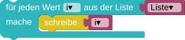

Das Programm soll die Wörter in eine Liste einlesen. Bestimme dann die Länge der Liste und gib diese aus.
Mit dem Baustein wird die Länge einer Liste bestimmt, d.h. die Anzahl der Elemente einer Liste, auch wenn alle Elemente gleich sind (siehe Test 2).
Mit der Funktion len(liste) wird die Länge einer Liste bestimmt, d.h. die Anzahl der Elemente einer Liste, auch wenn alle Elemente gleich sind (siehe Test 2).
Das Programm soll die Wörter in eine Liste einlesen. Hänge an jedes Element der Liste folgendes an:
- erledigt. Gib jedes Element der Liste in einer eigenen Zeile aus.
Das Programm soll die Wörter in eine Liste einlesen. Hänge an jedes Element der Liste folgendes an:
- erledigt. Gib jedes Element der Liste in einer eigenen Zeile aus.
Nutze diesmal den Baustein: .
Nutze diesmal die Schleife: for ele in liste: .
Mit dem Baustein wird auf jedes Element der Liste
zugegriffen. Begonnen
wird beim ersten Element der Liste. Der aktuelle Wert wird in der Variablen i gespeichert.
Im folgenden Beispiel wird jedes Element der Liste in die Ausgabe geschrieben.

Mit der Schleife for ele in liste: wird auf jedes Element der Liste
zugegriffen. Begonnen
wird beim ersten Element der Liste. Der aktuelle Wert wird in der Variablen ele gespeichert.
Im folgenden Beispiel wird jedes Element der Liste in die Ausgabe geschrieben.
for ele in liste:
print(ele)
Man könnte auch Index-weise über die Liste iterieren:
for i in range(len(liste)):
print(liste[i])
Diese Schleife tut genau das gleiche, wie die obere. Im oberen Fall betrachten wir nur das Element und im unteren Fall betrachten wir den Index des Elements.